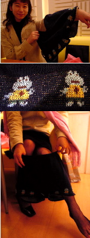
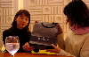
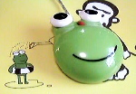
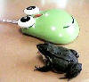
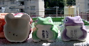
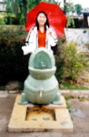
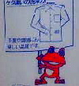
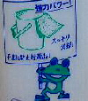

|
カエルパンツで彼氏もケロケロ！ 【銀座発=蘭子同志記者】私が愛用している毛糸のパンツです。まだ寒かったころ、東京に遊びに行った時に、 今年大流行していた毛糸のパンツを物色していたのですが、なんと銀座で売っていた毛糸のパンツ柄の中に、カエル柄がありました。少しだけ悩んだのですが、これも運命だとおもい、カエルパンツを購入しました。写真取材を受けるかどうか、随分悩みましたが、思いきって応募します。 どーして悩んだかと言うと、私が着用したものなので、まさか、大王様に生パン状態で、撮影してもらうなんて、へ○んたいチックなのでためらっていたからです。 サイズは、ふつうサイズで、下の部分に可愛いカエル柄が並んでいます。今年の冬は過ぎたのですが、年中売っていてほしいですねー なお、生パンツ状態では、なんなので入念に３度も洗濯したのですが、適度に使い込んだようになってしまい、かえってリアルになってしまいました。
クリスマスデートは、カエル柄でキメパン！ 【全国かえる奉賛会】そうなのだあああ。蘭子さんが、最近まで愛用していたカエルパンツを撮影することになろうとは！撮影は、誤解を生まないように、同性のカエラー・ぴのこ同志記者が、蘭子さんのカエルパンツを受領し＝写真右がシャネルの袋に入れたパンツをぴのこ同志に渡す＝、その受領式の模様を取材する、という慎重にも慎重を期した誤解を生まない方法で行なったのであるー。福岡市内の奥まった喫茶店で行われた写真撮影は、周囲にじいちゃんと孫の女子小学生？。喫茶店店員が注目するなか、おもむろに毛糸パンツを取り出し、いろいろと点検するうち、穿くポーズをローアングルから撮影するなど、次第にエスカレートしてきたので、周囲の人々も逃げ散ってしまったみたいです（笑）
しかし、おそるべしカエルパンツ。季節外れの今、安いうちに一括購入して、今年のクリスマスの彼氏とのデートの際のキメパンにしようではありませんかああああああああああ。
カエルマウスの改良版が出現！ 【東京発=ケロッピー・セブン同志記者】いつものように秋葉原を巡回パトロール中に、平成12年5月22日号、平成12年10月21日号で紹介されたカエルマウスが、カエル標準色でリニューアルされているのを発見し、買ってしまいました。
 以前に紹介されたものはスケルトンボディーでカエル度が低いですが、今回のものは写真のように本物のダルマガエルと比べても区別が付きません。並べているとダルマガエルの目玉をクリックしてしまいそうです。一緒に使っている「バザールでござーる」マウスパッドのカエルともよく似ています。使い心地は目玉が大きく、クリックしやすいです。握った感じは手の小さい人に向いているようです。 【全国かえる奉賛会】おおー。窓版しかないのが残念であるー。目玉がひとつのMacintosh版。目玉が３つのUNIX版もつくってくれー。しかし、操作性が格段に向上しているようで、なによりである。これにより、マウスは死語となり、フロッグスと呼称しようではないなああああ。秋葉原のカエル電化製品の定期巡回をしているとは、素晴らしいなり！
感状を発行したい気分なり。
長崎諏訪神社カエル神籤！ 【長崎発=のぐち同志記者】長崎諏訪神社のお正月限定おみくじのかえるちゃまたちです！本堂裏手の祠には、いままでのかえるちゃま達が転がっております。色とりどりのかえるちゃま達が、皆様をお出迎えいたします。おなかの中に書かれた番号が抽選番号になり、節分の日に行われる抽選会にて、商品券などが当たるようです。。 長崎に住んでいる間は、絶対ゲットしていきます！ちなみに、今年はきみどりいろでした。商品券より、かえるですよねー！
【全国かえる奉賛会】長崎の総鎮守にして、おくんちの舞台、諏訪神社がカエル化しているなんて！今年は、日本が再び鎖国して、長崎空港だけが開港することとなるはずだあああ。きっと長崎は素晴らしい都市になるであろう。商品券があたっても引き換えたりしないところがカエラーというものですねー。
諫早でもカエル水飲み場！ 【長崎発=のぐち同志記者】諫早にある干拓の里にて、4年前に撮影したものです。少しぼけぎみですが、おわかりいただけるでしょうか・・・。足元のはすの葉、ぱっかりあいた口。諫早湾といえば、むつごろうやはぜ等が有名かと思いますが、そこにかえるの登場です！この公園には他にもキッチュな遊具が満載でした。大人も、いえいえ、カエラーも十分楽しめることうけあいです！
太田記者はカエル水飲み場取材に挫折！【全国かえる奉賛会】おおー。このカエル水飲み場は、全国的に分布している謎の共通デザインシリーズ＝平成12年8月20日号を参照＝です。ちなみに以前、平成12年11月28日号で謎の解明を約束していた某非カエル新聞の太田記者は取材の挫折を宣言した。かえる新聞を読んでいる一般紙の記者諸君！このねたを解明してくれたら、かえる新聞から、編集局長賞よりもかっこいい、手書きの感状を贈るぞおおおおお。カエラー専用洗剤が発売！  【東京発=桶名傾同志記者】私の家では、食器、風呂、床、衣服など、家庭内のほとんどすべての掃除・洗濯を「アプトキープ」という洗剤でまかなっています。無リン・無香料・無着色で、分解しやすくて環境にやさしいのです。手にもやさしいので肌が弱い方にもオススメ。でも、それでいながら洗浄力は抜群。環境へのやさしさをアピールするためか、ボトルにはかわいいかえるが印刷されています！これだけでも持っている価値があります。 指標生物でもあるかえるを保護する意味からも全国のカエラーのみんなはアプトキープを使おう！ 問い合わせ先は、（株）コーセー／奈良県香芝市鎌田62／0745(78)1934
全国かえる奉賛会指定洗剤に！【全国かえる奉賛会】おおおー。素晴らしい！大王も石鹸成分指定の洗剤を使っているのだが、なかなか高額なのである。カエルの絵もついていない。しかし、「アプトキープ」はカエル絵付きとは素晴らしい。全国かえる奉賛会指定洗剤にするぞーっ！（株）コーセー様は、パッケージに『全国かえる奉賛会推奨商品』と印刷していいぞおお。いったいどこにいったらカエルのか。全国各地の販売場所を調査しましょー。インターネット通販もしてほしいな。カエルの「パントス君」が大活躍！【日本発=きーちゃん同志記者】大きな書店で偶然見つけました。コンピューター専用のゲームで、主人公がメチャ可愛いカエルなんです。名前は「パントス君」。
静かな書店の中で、狂喜乱舞してしまいましたが、貧乏だったので、購入はできませんでした。おしゃれで頭の良いカエルのパントス君が、偶然見つけたノートを元に大冒険を繰り広げるストーリーの様です。 「マンゴスティン」社のホームページに行くと、パントス君の詳しい情報も見られます。もちろん、たまらない画像も見る事ができますよ!
【全国かえる奉賛会】カエル主役のゲームが増えて、なによりであるー。ケロファーといい、パントス君といい、カエルキャラはのどかになるので、一家で楽しめるところがいいよね！
モローストラップ増産中！【福岡発=走るかえる同志記者】けろテン市場で発売中の、モローストラップの購入ありがとう。売り切れた特定デザインに注文があったので、ただいま生産中です。注文したみなさん、しばらくお待ちを！！
投稿採用者に武功カエル徽章を授与！ |
かえる古新聞過去に取り上げた記事を見出し付きで一覧したい人は、ここをクリック◆創刊号を見る◆先週号を見る◆話題の号を見る◆かえる新聞の昔を読む◆COOL NET FROG RANKING !
|
私も入っています。。全国かえる奉賛会
大王様に会うには、このバナーをクリック。ずっと奥に写真館があるぞ。全国かえる奉賛会に入会するには、自分のホームページのどこかに、下の部分を追加するとバナーがリンク付きで表示されるぞ。どんどん入会しましょー |


|